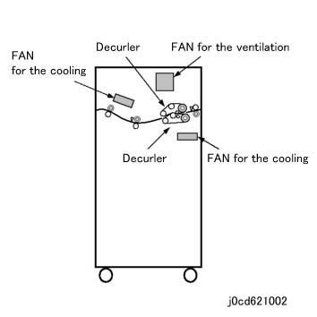
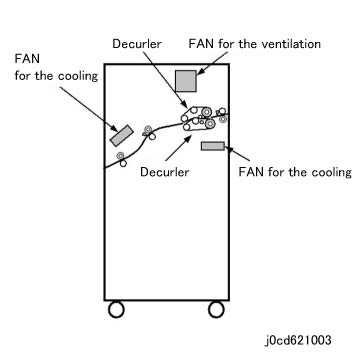
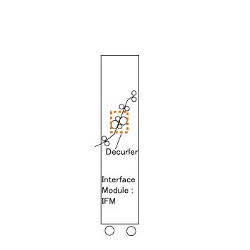

6.2.1.7 CDM, IFM Basic 配置 
以下 型号 是 prepared at CDM, IFM shipment. 哪个 is 已选择 is determined 按照 the 主机 to be connected (the difference of 纸张 输出 heights 的 主机).
CDM770 (冷却 消卷器 模块 770) :
Passes 纸张 该 已 received 从 IOT at 输出 高度 of 770mm 到 subsequent 设备 at the 高度 of 770 mm. Receives 纸张 in synchronization 和/与 纸张 速度 输出 从 IOT, 和 passes it 到 subsequent 设备 at a 速度 of 1000 mm/s.

(图 1) cd621002
CDM560 (冷却 消卷器 模块 560) :
Passes 纸张 该 已 received 从 IOT at 输出 高度 of 560 mm 到 subsequent 设备 at the 高度 of 770 mm. Speeds up/下 纸张 该 已 输出 从 IOT 按照 纸张 输出 条件 用于 the subsequent 设备, 和 然后 passes it 超过 to 设备.

(图 2) cd621003
IFM (接口 模块) :
The slim-类型 单元 passes 纸张 该 已 received 从 IOT at 输出 高度 of 560 mm 到 subsequent 设备 at the 高度 of 770 mm. Passes 纸张 速度 该 已 输出 从 IOT 超过 到 subsequent 设备. Simultaneous 连接 to CDM 和 IP 不是 possible.

(图 3) ifm620002
The AC 电源 用于 CDM is supplied 从 the 外部 电源 和 the AC 电源 Cord is provided separately.
The 通信 电缆 之间 the CDM 和 the 主机 is provided separately by FB, FBAP.